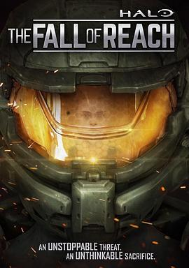

光环：致远星的陷落 第一季 / Halo: The Fall of Reach Season 1
原来halo讲的是这个故事，难怪Xbox只靠halo就能撑起自家一片天，故事真棒
作品信息
| 导演 | 伊安·科尔比 |
| 编剧 | Kenneth Peters / 希思·科森 / Eric Nylund |
| 主演 | 简·泰勒 / Steve Downes / 米歇尔·卢卡斯 / 布丽特·巴伦 / 特拉维斯·威林厄姆 / John Eric Bentley / 托德·哈伯空 |
| 类型 | 动作 / 科幻 / 动画 / 冒险 |
| 制片国家/地区 | 美国 / 加拿大 |
| 语言 | 英语 |
| 首播 | 2015-10-27(美国) |
| 季数 | 1 |
| 集数 | 3 |
| 单集片长 | 21分钟 |
| IMDb | tt4856322 |
说过什么
2019-09-29 08:49:17
广播 · 看过 · ★★★★☆
原来halo讲的是这个故事，难怪Xbox只靠halo就能撑起自家一片天，故事真棒
最后一次看到是 2026-08-01T11:05:48+10:00 · 豆瓣原页